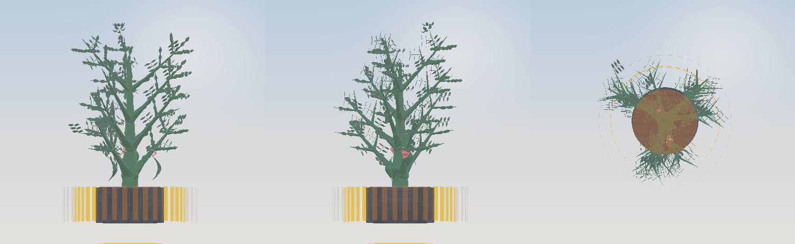
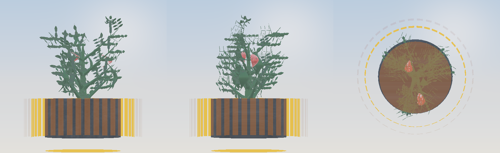
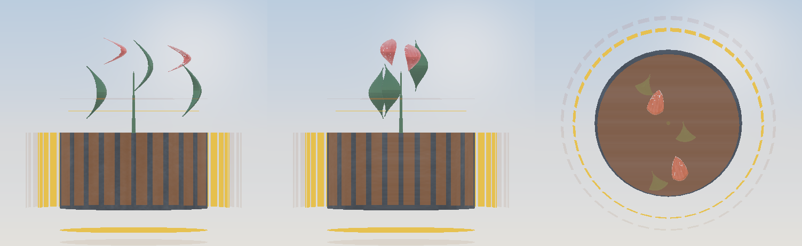

Hanging Fern Planter

A distinct hanging fern planter building-landscape object with explicit support, irrigation or attachment semantics and object-local botanical geometry.
Evidence 80/100 · Visual match unmeasured5 distinct grammar versions

A distinct hanging fern planter building-landscape object with explicit support, irrigation or attachment semantics and object-local botanical geometry.
Evidence 80/100 · Visual match unmeasured
A distinct indoor ficus planter building-landscape object with explicit support, irrigation or attachment semantics and object-local botanical geometry.
Evidence 80/100 · Visual match unmeasured
A distinct kitchen herb planter building-landscape object with explicit support, irrigation or attachment semantics and object-local botanical geometry.
Evidence 80/100 · Visual match unmeasured
A modern rectangular planter containing deterministic flowering herbs, scattered grass underplanting, modeled leaves, petals, soil, and drainage feet.
Evidence 100/100 · 99.85% minimum view match
A distinct snake plant trough building-landscape object with explicit support, irrigation or attachment semantics and object-local botanical geometry.
Evidence 80/100 · Visual match unmeasured